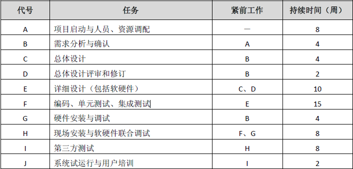
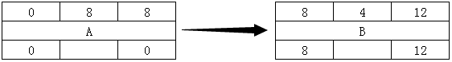
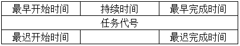

考试时间13:30——15:00 共90分钟。
- 本试卷共三道题，全部为必答题，每题25 分，满分75 分。
- 在答题纸的指定位置填写你所在的省、自治区、直辖市、计划单列市的名称。
- 在答题纸的指定位置填写准考证号、出生年月日和姓名。
- 答题纸上除填写上述内容外只能写解答。
- 解答时字迹务必清楚，字迹不清时，将不评分。
阅读下列说明，回答问题1 至问题3，将解答填入答题纸的对应栏内。
【说明】
A 公司是国内一家大型系统集成企业，已建立基于SJ/T 11234、SJ/T 11235 的涵盖公司所有部门和人员的质量管理体系。在公司建立质量管理体系之初，质量部要求各业务部门都参加体系建设，编写程序文件和作业指导，但这些部门都说忙，难以抽出人力。质量部便借鉴了其它公司的体系文件，对其简单修改后形成了A 公司的质量管理体系文件。
质量管理体系运行一年后，公司承担了一个大型软件集成项目。公司领导对此项目非常重视，任命高级项目经理陈工管理此项目，并强调一定要保质保量完成。同时，公司要求销售部、采购部、质量部各派一个人参与该项目，配合项目组开展工作。
根据公司的质量管理体系要求，项目的每个里程碑节点都要召开评审会，主要开发文档（包括要求规格说明书、总体设计和详细设计等）都需要通过评审。事实上，在以往的项目中，这些评审会都是项目组内讨论，讨论出结果后让相关部门负责人签字，质量部只要看到有签字的评审记录就不干预项目的实施。由于本项目关系重大，各部门都怕出了问题而承担责任，因此所有部门都参加了该项目的评审会。
几个评审会开完，项目组成员开始抱怨。说以前的项目评审都是我们自己讨论，其它部门根本没人仔细看。可是现在这个项目，各个部门都有人参与，评审会上每个人都提意见，并且意见经常不一致，没有人负责最后拍板；对于有些技术文件的评审，评审人员明明不懂还提出很多问题，还要费很大力气给他们解释。
在以往的项目中，虽然公司的程序文件中规定评审没通过就不能进入下一环节，但如果进度要求紧张的话，一般也不管什么流程了，抢进度要紧。但是在这个项目中，设计方案经过几次讨论都没有结果。项目经理陈工为了保证进度，向采购部提出提前采购设备，采购部以设计方案没有定稿为理由拒绝处理。无奈陈工找了好几次公司领导，最终领导拍板可以提前采购。项目就这样在不断的争执过程中进行，每次争执不下时陈工就去找公司领导。如此多次争执后，陈工发现质量管理体系文件中规定那么多评审纯粹是浪费时间，希望修改。
按照计划，现在项目应该进行到测试阶段，但实际上项目的详细设计还未通过评审。
【问题1】12 分
请简要叙述A公司的质量管理体系在建立和运行中存在的主要问题。
【问题2】8 分
如果你是A公司质量负责人，请简要叙述实施A 公司质量管理体系的改进步骤。
【问题3】5 分
项目质量管理包括（1）、（2）和（3）过程。A公司在建立质量管理体系后，应定期对质量管理体系的运行进行内部审核和（4）。质量体系内部审核属于质量管理中的（5）过程。
请将上面（1）到（5）处和答案填写在答题纸的对应栏内。
参考答案附后。
阅读下列说明，回答问题1 至问题4，将解答填入答题纸的对应栏内。
【说明】
W公司与所在城市电信运营商Z公司签订了该市的通信运营平台建设合同。W公司为此成立了专门的项目团队，由李工担任项目经理，参加项目的还有监理单位和第三方测试机构。李工对项目工作进行了分解，制作出如下表所示的任务清单。经过分析后李工认为进度风险主要来自需求分析与确认环节，因此在活动清单定义的总工期基础上又预留了4 周的应急储备时间。该进度计划得到了Z公司和监理单位的认可。

在项目启动与人员、资源调配（任务A）阶段，李工经过估算后发现编码、单元测试、集成测试（任务F）的技术人员不足。经公司领导批准后，公司人力资源部开始招聘技术人员，项目前期工作进展顺利，进入详细设计（任务E）后，负责任务E的骨干老杨提出，详细设计小组前期没有参加需求调研和确认，对需求文档的理解存在疑问。经过沟通后，李工邀请Z公司用户代表和项目团队相关人员召开了一次推进会议。会后老杨向李工提出，由于先前对部分用户需求的理解有误，须延迟4周才可完成详细设计。考虑到进度计划中已预留了4周的时间储备，李工批准了老杨的请求，并按原进度计划继续执行。
任务E 延迟4 周完成后，项目组织开始编码、单元测试和集成测试（任务F）。此时人力资源部招聘的新员工陆续到职，为避免进度延误，李工第一时间安排他们上岗。新招聘的员工大多是应届毕业生，即便有老员工带领，工作效率仍然不高。与此同时，W公司领导催促李工加快进度，李工只得组织新老员工加班。虽然他们每天加班，可最终还是用了20周才完成原来计划用15周完成的任务F。此时已临近春节假期，在李工的提议下，W公司决定让项目组在假期结束前提前1周入驻Z公司进行现场安装与软硬件联合调试。由于Z公司和监理单位春节期间只有值班人员，无法很好地配合项目组工作，导致联合调试工作进展不顺利。为了把延误的进度赶回来，经公司同意，春节后一上班，李工继续组织项目团队加班。此时许多成员都感到身心疲惫，工作效率下降，对项目经理的安排充满了抱怨。
【问题1】（8 分）
根据任务清单，将前导图填充完整，并指出项目的关键路径、计算计划总工期、活动C 和G 的总时差（总浮动时间）。

节点图例如下图所示：

【问题2】（6 分）
结合本案例简要叙述项目经理在进度管理中存在的主要问题。
【问题3】（6 分）
如果你是项目经理，请结合本案例简要叙述后续可采取哪些应对措施。
【问题4】（5 分）
除了采取进度网络分析，关键路径法和进度压缩技术外，请指出李工在制定进度计划时还可以采用哪些方法或工具。
参考答案附后。
阅读下列说明，回答问题1 至问题3，将解答填入答题纸的对应栏内。
【说明】
项目经理李工和近五十人的项目团队经过9 个月的辛苦努力，在某信息系统项目约定的最后期限内完成了信息系统的开发工作，并通过了系统试运行。尽管这是李工负责的第一个项目，但还是算圆满地结束了。李工感觉很有成就感，也对团队成员充满了感激。由于项目工期几度耽搁，在项目最后阶段，项目团队成员加班加点工作了近3个月，团队成员不仅精神疲惫而且因此耽误了其他项目的很多工作。鉴于项目已经完成了试运行，李工就组织大家召开了项目总结会。在总结会上李工表示了对大家的感谢，然后就宣布项目已经结束，项目团队成员可以各自按照原先的人力资源计划进入新的项目。
项目总结会后的第二天，建设方的项 目负责人就打来了电话，说是建设方总经理发现该信息系统还有一项功能需要添加，尽管该功能在原先的合同中没有体现，但是总经理还是希望添加该项目功能。而且建设方的项目负责人还指出，试运行之后相关部门发觉还有一些相关的操作手册没有提供，希望建设方补充提供相关文档。
刚接完建设方项目负责人的电话，公司财务审计部门和项目管理办公室的人员也敲门进来，首先问李工该项目是否已经完成，如果已经完成就需要走公司的相关项目收尾流程。接着就要求李工和他的项目团队成员配合组织项目审计和项目收尾方面的工作，并告诉李工，该项目的尾款，20%的合同金额对方还没有付，请李工催促对方尽快付款。
【问题1】（10 分）
结合本案例，简要回答项目收尾的主要工作包括哪几个部分并分别说明其主要内容。
【问题2】（10 分）
请简要说明项目团队成员转移进入新项目的前提条件。
【问题3】（5 分）
请指出项目收尾阶段需要完成哪些文档？
参考答案附后。
问题1:
A公司的质量管理体系在建立和运行中存在的主要问题有：
- 质量管理体系在建立时，缺乏领导的重视与员工的有效参与；
- 借鉴其他公司建立的质量体系很有可能不符合本公司的实际；
- 建立的质量体系本身没有经过评审；
- 以往项目的质量管理流于形式，使得质量体系不能得到完善与改进；
- 在质量体系的运行过程中，对于如今的重点项目，没有结合项目实施发现质量体系本身的不足；
- 参与项目质量评审会议的人员，对于自己的职责认识不清；
- 缺乏变更控制流程，这往往导致项目质量失控；
- 项目组成员以及参与项目质量评审的人员缺少项目质量保证、质量控制相关的技术知识。
问题2:
改进步骤：
- 首先自己学习并掌握公司质量体系建设相关专业知识。
问题3:
（1）质量规划，（2）质量保证，（3）质量控制，（4）外部审核，（5）质量保证
问题1:
完整前导图略。
项目关键路径：A-->B-->C-->E-->F-->H-->I-->J
计划总工期：8+4+4+10+15+8+8+2=59周
C的总时差=LSC-ESC=12-12=0周
G的总时差=LSG-ESG=37-12=15周
问题2:
进度管理中存在的主要问题（每条2分，满分6分）：
- 对于任务B的进度风险估计失误；
- 对于任务F的资源估算严重不足；
- 制定进度计划时未发现任务E的进度风险，导致其延迟4周；
- 任务E延迟后，未及时更新进度计划；
- 硬件安装与调试工作有15周总时差，没有必要再春节加班；
- 未考虑联合测试工作对Z公司和监理单位的影响（并未与其进行沟通），导致虽然项目团队加班，但联合测试工作进展不顺利；
- 缺乏对新员工的培训，使其效率不高，进度滞后；
- 未考虑连续加班对进度的负面影响。
问题3：
应对措施包括（每条2分，满分6分）：
- 安排现有团队成员进行适当的休息。
- 与公司领导沟通，争取得到公司在人员以及其他资源上的支持。
- 综合分析项目实际进展及团队情况，调整进度计划并报甲方与监理审批。
- 针对项目整体进度进行综合考虑，首先确立保证项目关键路径上的工作进度。
- 有计划地对新员工进行培训。
问题4：
制定进度计划时还可以采用的方法或工具有（每条1分，满分5分）：
- 假设情景分析
- 资源平衡
- 关键链法
- 项目管理软件
- 应用日历
- 进度模型
- 甘特图
问题1:
项目收尾的主要工作包括项目验收、项目总结、项目评估审计三项内容。
项目验收：验收项目产品、文档及已经完成的交付成果。一般来说验收需要正式的验收报告，对于系统集成项目，一般需要正视的验收测试工作。验收测试工作可以由业主和承建单位共同进行，也可以由第三方公司进行，但无论哪种方式都需要双方认可的正式文档为依据进行。
项目总结：收集整理项目过程文档和经验教训，对所有的文档进行归类，形成项目总结会议讨论稿，召开项目总结会。
项目评估审计：项目评估是将项目的所有工作加以客观的评价，从而对项目全体成员的成果形成绩效结论。项目的审计应由项目管理部门与财务部门共同进行，相关的审计项目应在项目成本管理中列出。
问题2:
项目团队成员转移进入新项目的前提条件：
- 项目人力资源管理计划中描述的人员转移条件已经触发。
- 项目团队成员所承担的工作已经全部完成，提交了经过确认的可交付物并已完成工作交接。
- 项目经理与团队成员确认该成员的工作衔接已告一段落或者已经完成。
- 项目经理签发项目团队成员转移确认文件。
- 项目经理签发项目团队成员的绩效考核文件。
- 项目经理通知所有相关的干系人。
- 召开总结表彰大会。
问题3:
项目收尾阶段需要完成的文档包括：
- 项目介绍文档
- 项目最终报告
- 项目最终验收报告
- 系统说明手册
- 系统维护手册
- 软硬件产品说明书、质量保证书
- 项目评估报告
- 项目审计报告
- 项目总结会会议纪要